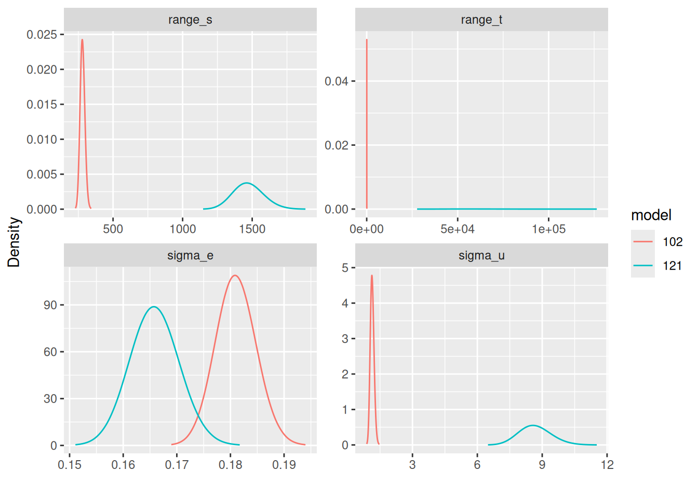

The Piemonte dataset example
Elias T Krainski
Started in 2022. Last update: Tue 20 Jun, 2023
Source:vignettes/web/piemonte.Rmd
piemonte.RmdAbstract
In this vignette we illustrate how to fit some of the spacetime models in Lindgren et al. (2023), for the dataset analysed in Cameletti et al. (2013). To perform this we will use the Bayesian paradigm with theINLA package, using the features provided by the inlabru package to facilitate the coding.
Introduction
The packages and setup
We start loading the required packages and those for doing the visualizations, the ggplot2 and patchwork packages.
library(ggplot2)
library(patchwork)
library(INLA)
#> Loading required package: Matrix
#> Loading required package: sp
#> The legacy packages maptools, rgdal, and rgeos, underpinning this package
#> will retire shortly. Please refer to R-spatial evolution reports on
#> https://r-spatial.org/r/2023/05/15/evolution4.html for details.
#> This package is now running under evolution status 0
#> This is INLA_23.06.15 built 2023-06-15 06:01:53 UTC.
#> - See www.r-inla.org/contact-us for how to get help.
library(INLAspacetime)
library(inlabru)We consider the following settings for INLA
#inla.setOption(
# inla.mode = "compact",
# num.threads = "5:-1",
# smtp = "pardiso",
# pardiso.license = "~/.pardiso.lic"
#)We will ask it to return the WAIC, DIC and CPO
ctrc <- list(
waic = TRUE,
dic = TRUE,
cpo = TRUE)Getting the dataset
We will use the dataset analysed in Cameletti et al. (2013), that can be downloaded as follows. First, we set the filenames
u0 <- paste0(
"http://inla.r-inla-download.org/",
"r-inla.org/case-studies/Cameletti2012/")
coofl <- "coordinates.csv"
datafl <- "Piemonte_data_byday.csv"
bordersfl <- "Piemonte_borders.csv"Download and read the borders file
### get the domain borders
if(!file.exists(bordersfl))
download.file(paste0(u0, bordersfl), bordersfl)
dim(pborders <- read.csv(bordersfl))
#> [1] 27821 2Download and read the coordinates file
### get the coordinates
if(!file.exists(coofl))
download.file(paste0(u0, coofl), coofl)
dim(locs <- read.csv(coofl))
#> [1] 24 3Download and read the dataset
### get the dataset
if(!file.exists(datafl))
download.file(paste0(u0, datafl), datafl)
dim(pdata <- read.csv(datafl))
#> [1] 4368 11Inspect the dataset
head(pdata)
#> Station.ID Date A UTMX UTMY WS TEMP HMIX PREC EMI PM10
#> 1 1 01/10/05 95.2 469.45 4972.85 0.90 288.81 1294.6 0 26.05 28
#> 2 2 01/10/05 164.1 423.48 4950.69 0.82 288.67 1139.8 0 18.74 22
#> 3 3 01/10/05 242.9 490.71 4948.86 0.96 287.44 1404.0 0 6.28 17
#> 4 4 01/10/05 149.9 437.36 4973.34 1.17 288.63 1042.4 0 29.35 25
#> 5 5 01/10/05 405.0 426.44 5045.66 0.60 287.63 1038.7 0 32.19 20
#> 6 6 01/10/05 257.5 394.60 5001.18 1.02 288.59 1048.3 0 34.24 41Prepare the time to be used
range(pdata$Date <- as.Date(pdata$Date, "%d/%m/%y"))
#> [1] "2005-10-01" "2006-03-31"
pdata$time <- as.integer(difftime(
pdata$Date, min(pdata$Date), units = "days")) + 1Standardize the covariates that will be used in the data analysis and
define a dataset including the needed information where the outcome is
the log of PM10, as used in Cameletti et al. (2013).
### prepare the covariates
xnames <- c("A", "WS", "TEMP", "HMIX", "PREC", "EMI")
xmean <- colMeans(pdata[, xnames])
xsd <- sapply(pdata[xnames], sd)
### prepare the data (st loc, scale covariates and log PM10)
dataf <- data.frame(pdata[c("UTMX", "UTMY", "time")],
scale(pdata[xnames], xmean, xsd),
y = log(pdata$PM10))
str(dataf)
#> 'data.frame': 4368 obs. of 10 variables:
#> $ UTMX: num 469 423 491 437 426 ...
#> $ UTMY: num 4973 4951 4949 4973 5046 ...
#> $ time: num 1 1 1 1 1 1 1 1 1 1 ...
#> $ A : num -1.3956 -0.7564 -0.0254 -0.8881 1.4785 ...
#> $ WS : num -0.0777 -0.2319 0.038 0.4429 -0.6561 ...
#> $ TEMP: num 2.1 2.07 1.82 2.06 1.86 ...
#> $ HMIX: num 2.18 1.69 2.53 1.38 1.37 ...
#> $ PREC: num -0.29 -0.29 -0.29 -0.29 -0.29 ...
#> $ EMI : num -0.1753 -0.3454 -0.6353 -0.0985 -0.0324 ...
#> $ y : num 3.33 3.09 2.83 3.22 3 ...The data model definition
We consider the following linear mixed model for the outcome \[ \mathbf{y} = \mathbf{W}\mathbf{\beta} + \mathbf{A}\mathbf{u} + \mathbf{e} \] where \(\beta\) are fixed effects, or regression coefficients including the intercept, for the matrix of covariates \(\mathbf{W}\), \(\mathbf{u}\) is the spatio-temporal random effect having the matrix \(\mathbf{A}\) the projector matrix from the discretized domain to the data. The spatio-temporal random effect \(\mathbf{u}\) is defined in a continuous spacetime domain being discretized considering meshes over time and space. The difference from Cameletti et al. (2013) is that we now use the models in Lindgren et al. (2023) for \(\mathbf{u}\).
Define a temporal mesh, with each knot spaced by h,
where h = 1 means one per day.
nt <- max(pdata$time)
h <- 1
tmesh <- inla.mesh.1d(
loc = seq(1, nt + h/2, h),
degree = 1)
tmesh$n
#> [1] 182Define a spatial mesh, the same used in Cameletti et al. (2013).
smesh <- inla.mesh.2d(
cbind(locs[,2], locs[,3]),
loc.domain = pborders,
max.edge = c(50, 300),
offset = c(10, 140),
cutoff = 5,
min.angle = c(26, 21))
smesh$n
#> [1] 142Visualize the spatial mesh, the border and the locations.
par(mfrow = c(1,1), mar = c(0,0,1,0))
plot(smesh, asp = 1)
lines(pborders, lwd = 2, col = "green4")
points(locs[, 2:3], pch = 19, col = "blue")
We set the prior for the likelihood precision considering a PC-prior, Simpson et al. (2017), through the following probabilistic statements: P(\(\sigma_e > U_{\sigma_e}\)) = \(\alpha_{\sigma_e}\), using \(U_{\sigma_e}\) = 1 and \(\alpha_{\sigma_e} = 0.05\).
With inlabru we can define the likelihood model with
the like() function and use it for fitting models with
different linear predictors later.
lhood <- like(
formula = y ~ .,
family = "gaussian",
control.family = list(
hyper = lkprec),
data = dataf)The linear predictor, the right-rand side of the formula, can be defined using the same expression for of the both models that we are going to fit and is
The spacetime models
The implementation of the spacetime model uses the
cgeneric interface in INLA, see its
documentation for details. Therefore we have a C code to
mainly build the precision matrix and compute the model parameter priors
and compiled as static library. We have this code included in the
INLAspacetime package but it is also being copied to
the INLA package and compiled with the same compilers
in order to avoid possible mismatches. In order to use it, we have to
define the matrices and vectors needed, including the prior parameter
definitions.
The class of models in Lindgren et al. (2023) have the spatial range, temporal range and marginal standard deviation as parameters. We consider the PC-prior, as in Fuglstad et al. (2017), for these parameters defined from the probability statements: P(\(r_s<U_{r_s}\))=\(\alpha_{r_s}\), P(\(r_t<U_{r_t}\))=\(\alpha_{r_t}\) and P(\(\sigma<U_{\sigma}\))=\(\alpha_{\sigma}\). We consider \(U_{r_s}=100\), \(U_{r_t}=5\) and \(U_{\sigma}=2\). \(\alpha_{r_s}=\alpha_{r_t}=\alpha_{\sigma}=0.05\)
The selection of one of the models in Lindgren et al. (2023) is by chosing the \(\alpha_t\), \(\alpha_s\) and \(\alpha_e\) as integer numbers. We will start considering the model \(\alpha_t=1\), \(\alpha_s=0\) and \(\alpha_t=2\), which is a model with separable spatio-temporal covariance, and then we fit some of the other models later.
Defining a particular model
We define an object with the needed use the function
stModel.define() where the model is selected considering
the values for \(\alpha_t\), \(\alpha_s\) and \(\alpha_e\) collapsed. In order to
illustrate how it is done, we can set an overall integrate-to-zero
constraint, which is not need but helps model components identification.
It uses the weights based on the mesh node volumes, from both the
temporal and spatial meshes. This can be set automatically when defining
the model by adding constr = TRUE.
model <- "102"
stmodel <- stModel.define(
smesh, tmesh, model,
control.priors = list(
prs = c(150, 0.05),
prt = c(10, 0.05),
psigma = c(5, 0.05)),
constr = TRUE)Initial values for the hyper-parameters help to fit the models in less computing time. It is also important to consider in the light that each dataset has its own parameter scale. For example, we have to consider that the spatial domain within a box of around \(203.7\) by \(266.5\) kilometers, which we already did when building the mesh and setting the prior for or \(r_s\).
We can set initial values for the log of the parameters so that it would take less iterations to converge:
theta.ini <- c(4, 7, 7, 1)The code to fit the model through inlabru is
fit102 <-
bru(M,
lhood,
options = list(
control.mode = list(theta = theta.ini, restart = TRUE),
control.compute = ctrc))The computing time is
fit102$cpu
#> Pre Running Post Total
#> 1.082259 944.715038 5.392718 951.190014Summary of the posterior marginal distributions for the fixed effects
fit102$summary.fixed[, c(1, 2, 3, 5)]
#> mean sd 0.025quant 0.975quant
#> Intercept 3.73744098 0.241853786 3.260123896 4.214248405
#> A -0.17895115 0.049278366 -0.276630473 -0.082390236
#> WS -0.06034311 0.008446065 -0.076895057 -0.043769398
#> TEMP -0.12181538 0.035192078 -0.190897179 -0.052872676
#> HMIX -0.02384308 0.013208896 -0.049706440 0.002099424
#> PREC -0.05356068 0.008605912 -0.070421584 -0.036668615
#> EMI 0.03659603 0.015079616 0.006666037 0.065890294For the hyperparameters, we transform the posterior marginal distributions for the model hyperparameters from the ones computed in internal scale, \(\log(1/\sigma^2_e)\), \(\log(r_s)\), \(\log(r_t)\) and \(\log(\sigma)\), to the user scale parametrization, \(\sigma_e\), \(r_s\), \(r_t\) and \(\sigma\), respectivelly.
post.h <- list(
sigma_e = inla.tmarginal(function(x) exp(-x/2),
fit102$internal.marginals.hyperpar[[1]]),
range_s = inla.tmarginal(function(x) exp(x),
fit102$internal.marginals.hyperpar[[2]]),
range_t = inla.tmarginal(function(x) exp(x),
fit102$internal.marginals.hyperpar[[3]]),
sigma_u = inla.tmarginal(function(x) exp(x),
fit102$internal.marginals.hyperpar[[4]])
)Then we compute and show the summary of it
shyper <- t(sapply(post.h, function(m)
unlist(inla.zmarginal(m, silent = TRUE))))
shyper[, c(1, 2, 3, 7)]
#> mean sd quant0.025 quant0.975
#> sigma_e 0.1806347 0.003793794 0.1733157 0.1882151
#> range_s 277.8478053 17.052628017 246.0378467 312.9909265
#> range_t 48.5655929 7.871462230 35.1795048 66.0248683
#> sigma_u 1.1230248 0.085661291 0.9666323 1.3028629However, it is better to look at the posterior marginal itself, and we will visualize it later.
The model fitted in Cameletti et al. (2013) includes two more covariates and setup a model for discrete temporal domain where the temporal correlation is modeled as a first order autoregression with parameter \(\rho\). In the fitted model here is defined considering continuous temporal domain with the range parameter \(r_s\). However, the first order autocorrelation could be taken as \(\rho = \exp(-h\sqrt{8\nu}/r_s)\), where \(h\) is the temporal resolution used in the temporal mesh and \(\nu\) is equal \(0.5\) for the fitted model. We can compare ou results with Table 3 in Cameletti et al. (2013) with
Comparing different models
We now fit the model \(121\) for \(u\) as well, we use the same code for building the model matrices
model <- "121"
stmodel <- stModel.define(
smesh, tmesh, model,
control.priors = list(
prs = c(150, 0.05),
prt = c(10, 0.05),
psigma = c(5, 0.05)),
constr = TRUE)and use the same code for fitting as follows
fit121 <-
bru(M,
lhood,
options = list(
control.mode = list(theta = theta.ini, restart = TRUE),
control.compute = ctrc))We will join these fits into a list object to make it easier working with it
results <- list("u102" = fit102, "u121" = fit121)The computing time for each model fit
sapply(results, function(r) r$cpu)
#> u102 u121
#> Pre 1.082259 0.7484939
#> Running 944.715038 3167.6352224
#> Post 5.392718 3.3944588
#> Total 951.190014 3171.7781751and the number of fn-calls during the optimization are
sapply(results, function(r) r$misc$nfunc)
#> u102 u121
#> 304 426The posterior mode for each parameter in each model (in internal scale) are
sapply(results, function(r) r$mode$theta)
#> u102 u121
#> Log precision for the Gaussian observations 3.4235133 3.594553
#> Theta1 for field 5.6237032 7.289114
#> Theta2 for field 3.8588522 10.974946
#> Theta3 for field 0.1084578 2.152672We compute the posterior marginal distribution for the hyper-parameters in the user-interpretable scale, like we did before for the first model, with
posts.h2 <- lapply(1:2, function(m) vector("list", 4L))
for(m in 1:2) {
posts.h2[[m]]$sigma_e =
data.frame(
parameter = "sigma_e",
inla.tmarginal(
function(x) exp(-x/2),
results[[m]]$internal.marginals.hyperpar[[1]]))
for(p in 2:4) {
posts.h2[[m]][[p]] <-
data.frame(
parameter = c(NA, "range_s", "range_t", "sigma_u")[p],
inla.tmarginal(
function(x) exp(x),
results[[m]]$internal.marginals.hyperpar[[p]])
)
}
}Join these all to make visualization easier
posts.df <- rbind(
data.frame(model = "102", do.call(rbind, posts.h2[[1]])),
data.frame(model = "121", do.call(rbind, posts.h2[[2]]))
)
ggplot(posts.df) +
geom_line(aes(x = x, y = y, group = model, color = model)) +
ylab("Density") + xlab("") +
facet_wrap(~parameter, scales = "free")
The comparison of the model parameters of \(\mathbf{u}\) for different models have to be done in light with the covariance functions as illustrated in Lindgren et al. (2023). The fitted \(\sigma_e\) by the different models are comparable and we can see that when considering model \(121\) for \(\mathbf{u}\), its posterior marginal are concentrated in values lower than when considering model \(102\).
We can look at the posterior mean of \(u\) from both models and see that under model ‘121’ there is a wider spread.
par(mfrow = c(1, 1), mar = c(3, 3, 0, 0.0), mgp = c(2, 1, 0))
uu.hist <- lapply(results, function(r)
hist(r$summary.random$field$mean,
-60:60/20, plot = FALSE))
ylm <- range(uu.hist[[1]]$count, uu.hist[[2]]$count)
plot(uu.hist[[1]], ylim = ylm,
col = rgb(1, 0.1, 0.1, 1.0), border = FALSE,
xlab = "u", main = "")
plot(uu.hist[[2]], add = TRUE, col = rgb(0.1, 0.1, 1, 0.5), border = FALSE)
legend("topleft", c("separable", "non-separable"),
fill = rgb(c(1,0.1), 0.1, c(0.1, 1), c(1, 0.5)),
border = 'transparent', bty = "n")
We can also check fitting statistics such as DIC, WAIC, the negative of the log of the probability ordinates (LPO) and its cross-validated version (LCPO), summarized as the mean.
t(sapply(results, function(r) {
c(DIC = mean(r$dic$local.dic, na.rm = TRUE),
WAIC = mean(r$waic$local.waic, na.rm = TRUE),
LPO = -mean(log(r$po$po), na.rm = TRUE),
LCPO = -mean(log(r$cpo$cpo), na.rm = TRUE))
}))
#> DIC WAIC LPO LCPO
#> u102 -0.3787469 -0.2614016 -0.4078399 -0.1139939
#> u121 -0.4113521 -0.3164072 -0.5085325 -0.1099647The automatic group-leave-out cross validation
One may be interested in evaluating the model prediction. The leave-one-out strategy was already available in INLA since several years ago, see Held, Schrodle, and Rue (2010) for details. Recently, an automatic group cross validation strategy was implemented, see Liu and Rue (2023) for details.
g5cv <- lapply(
results, inla.group.cv, num.level.sets = 5,
strategy = "posterior", size.max = 50)We can inspect the detected observations that have the posterior linear predictor correlated with each one, including itself. For 100th observation under model “102†we have
g5cv$u102$group[[100]]
#> $idx
#> [1] 52 76 98 100 106 124
#>
#> $corr
#> [1] 0.2550140 0.4275774 0.2989975 1.0000000 0.3286188 0.4275774and for the result under model “121†we have
g5cv$u121$group[[100]]
#> $idx
#> [1] 52 76 98 100 124 148
#>
#> $corr
#> [1] 0.1668915 0.3732088 0.1668915 1.0000000 0.3756488 0.1637220which has intersection but are not the same, for the model setup used.
We can check which are these observations in the dataset
dataf[g5cv$u102$group[[100]]$idx, ]
#> UTMX UTMY time A WS TEMP HMIX PREC
#> 52 437.36 4973.34 3 -0.8881265 0.982687762 1.077344 -0.6959771 1.94505331
#> 76 437.36 4973.34 4 -0.8881265 0.674216318 1.297701 0.9479287 3.70037355
#> 98 423.48 4950.69 5 -0.7563919 -0.578948923 1.387847 -0.4413098 0.08590275
#> 100 437.36 4973.34 5 -0.8881265 0.770613644 1.441935 0.2530248 0.16426526
#> 106 416.65 4985.65 5 0.3225334 -0.000564966 1.397863 1.1608209 0.63052220
#> 124 437.36 4973.34 6 -0.8881265 0.751334179 1.618220 1.0845756 0.03692618
#> EMI y
#> 52 -0.01821338 2.564949
#> 76 -0.01542101 2.708050
#> 98 -0.27115486 2.484907
#> 100 0.01622576 2.890372
#> 106 -0.61950205 2.708050
#> 124 0.02599903 2.995732and found that most are at the same locations in nearby time.
We can compute the negative of the mean of the log score so that lower number is better